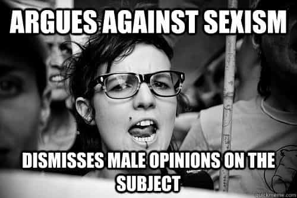
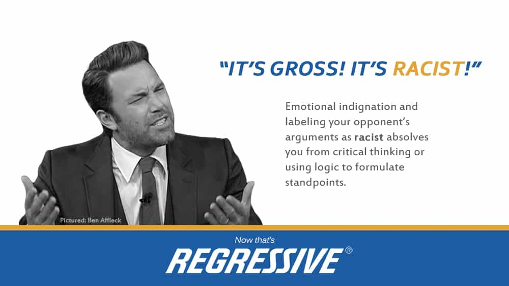

< < < Back
4 Words To Start Fighting The Left’s Orwellian Rhetoric – Return Of Kings
Words have tremendous power, especially when it comes to the political landscape. Buzz words are thrown around, opponents are labeled as following a certain ideology, and the second that someone thinks you’re a “Conservative,” or a “Liberal,” they automatically assume a whole host of things about you as a human being.
The Left has been beating us at the semantics game for the past decade or so—they expertly use vague terms and words with multiple meanings so that they can weasel their way around logic by sneakily choosing whichever definition they see fit depending on the situation. Men, I propose that it’s time we start taking into consideration just how important words are.
I would like to implore the men of Return Of Kings to start using the following words, for several reasons:
- Using these words will eliminate at least 50% of all conflicts
- Leftists won’t be able to twist our meanings anymore
- Our neomasculinity movement will gain more credibility
Just by using a few, well-selected words, I believe that we will drastically increase our ability to convince others of our opinions, and fend off most of the vicious semantics games that Leftists play.
1. “Misandry” in Place of “Feminism”

For far too long, have men in the manosphere used the word “feminism,” when really they’re referring to third wave feminism, or modern college campus feminism. Just this simple little word is, perhaps, the reason why so many women are vehemently against the manosphere.
Upon hearing that we don’t support “feminism,” what does the average American think?
- That we hate women
- That we don’t think women should be allowed to own property
- That we don’t want women to have any rights
- That we want to “oppress” women
- That we’re “manipulative pickup artists“
What they don’t realize is that we’re talking about neo-feminism, which is an entirely different animal. The ideologues and proponents of neo-feminism have consistently shown us that they hate men, and want us to become castrated, weak little boys, who can be thrown into jail over a mere accusation. Most people, upon hearing what we ACTUALLY believe, would probably agree with us, or at least hear us out.
Just by using the term misandry, when it is appropriate, we’re clarifying our opinions. Most people don’t even know that there’s more than one type of feminism, so just by using the word neo-feminism, we’re automatically exposing them to a crucial distinction between actual early 1900’s feminism, and modern day safe-space, “rape culture” feminism.
2. “Regressive Left” in Place of “Liberalism”

It’s time that we call the “progressive left,” what they really are—regressive. They claim that they want equality, but what they really want is for everyone who disagrees with them to have their rights revoked. Obviously they don’t say this, but if you observe the policies that they advocate and put into place, it becomes abundantly clear. The common rhetorical games that the “regressive left” plays, are:
- Calling you a racist, if you like Trump’s immigration policies
- Calling you a sexist, for pointing out facts (such as how the wage gap is a myth)
- Calling you hateful, simply because you disagree with them
The problem is, however, plenty of liberals do not in fact use these low-blow tactics—yet any time you say that you don’t like “Leftism,” you’re immediately ostracizing half of the population which tends to vote liberally. By stating the term “regressive left,” you’re making it very clear that your issue isn’t necessarily with moderate liberalism (although it very well may be), but that your main gripe is with hyper-leftism.
This simple distinction will make people more willing to hear our opinions—in a world where being “progressive,” is lauded as a virtue, labeling a group as being “regressive,” will immediately get social support. By using the term “regressive left,” not only are we speaking in a way that’s politically correct (because nobody wants to be regressive), but we’re calling them out for what they are.
3. “Pro-American” in Place of “Anti-Immigration”

If you ever take some time to look at the prefixes that people use to clarify their opinions, you’ll find that there’s immense power in simply saying that you’re “pro” whatever, and that your opponent is “anti” whatever. Most people are completely retarded, so any time they hear “anti” something, they assume you’re a horrible person.
It doesn’t matter if what you’re against is a bad thing—just the fact that you put “anti” in front of something is like a buzz word. The same goes for pro. When you put the prefix “pro” in front of something, people automatically assume that your cause is just. It’s high time that we start using these two little prefixes to our advantage.
From now on, anyone who wants to open the borders to violent immigrants and ISIS members is anti-American. No, they’re not pro-immigration, they’re anti-American. And us? No, no, we’re not anti-immigration. We’re pro-American. This subtle difference in framing the discussion entirely changes the outcome, because by saying that we’re pro-American (which we are), the debate isn’t so much about why we “hate refugees,” in the words of our opponents, but rather about why we value American interests first.
We’re not anti-neo-feminist, we’re pro-masculinity. We’re not anti-Hillary, we’re pro-Trump. We’re not anti-immigration, we’re pro-American. We’re not anti-gun control, we’re pro-gun rights. We’re not anti-censorship, we’re pro-freedom.
4. “Criminal Aliens” in Place of “Illegal Immigrants”
To be honest, it’s completely moronic that the Left would view these things as being different, but alas, the regressive left (see what I did there) is, in fact, completely moronic. Trump has been using the term “Criminal Aliens,” in place of “Illegal Immigrants,” recently, and for good reason.
As soon as the Left hears the term “illegal immigrants,” for some crazy reason, they have some image of a poor, innocent refugee, who’s just desperately trying to escape his war-torn home. And while this is often times the case, as we’ve seen with the “refugee” crisis in Europe, most of these “refugees,” are anything, but. Most of them are fighting-aged men who’ve been raised in a barbaric homeland, where throwing acid on a woman’s face is a normal penalty for exposing her ankles.
By saying the term “criminal aliens,” we immediately bring up the issue: they’ve committed the crime of illegal immigration. This is why they should not be allowed to vote, and it’s why they should be deported—they have committed a crime. Again, I cannot emphasize how ridiculous it is that we should have to say this, but for some reason the Leftist’s brain can’t seem to process the idea of illegal immigration. Hopefully, by using slightly different rhetoric, we can get through to them and make a good case for our beliefs.
Read More: Words Like “Man” And “Chairman” Are Being Censored On College Campuses